Grace · 10 AI videos, 7 to 15 seconds · job folder ugc/vans-sequin-authentic
V11 · night + phone flash · cut · needs your OK
V11: the flash comes on
10.1 s, music-only (silent track for Grace's sound), no text, AI finish applied last. Shots: feet in the dark for 0.6 s, then the flash comes on (free, in the edit) · the walk · both hands tightening the bow (rings kept, your call) · a slow push-in on the sequins. Checked: two shoes or fewer in every frame, toes pointing one way, VANS tab dark with white letters, no added stars or glints (the bright line on her shin near 7.8 s is the flash on her skin), no frozen stretches, different from V1 to V10. Kie for V11: $0.66 (4 clips; the stills were free in your Gemini app).
V11 · night flash · 10.1 s
Caption: Took these out at night with the flash on 🖤 #ad #vans #sequinvans #nightout
V11 · night + phone flash · test clip · answered: go (keep S3, S4 at 4 s)
V11 test clip: the night walk
Grace asked for new b-roll at night with the flash on. These are your 4 Gemini photos (free) and the walking test clip, made on Seedance 2.0 Mini on Kie ($0.16, your pick B). Checked at 3 and 12 frames a second: real steps across the sidewalk, toes always pointing the same way, two shoes, the tab dark with white letters, no stars or glints, white flash light with no yellow. From about 2.5 s the camera swings and the checkers blur a bit, so the cut uses about 0 to 2.5 s. Your hand shows at the top for a moment near the end, which is natural.
V11 S2 walk · Seedance 2.0 Mini · 4 s raw
The 4 photos (from your Gemini chat)
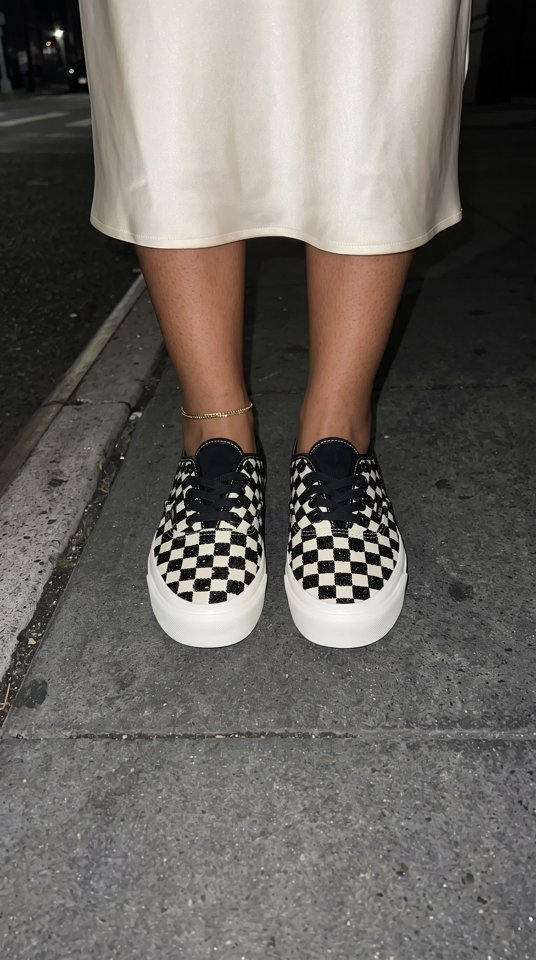
S1 hook: dark first, then the flash comes on (done free in the edit)
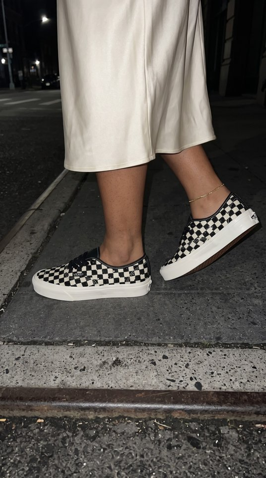
S2 walk (side tab fixed free: it read VANOe)
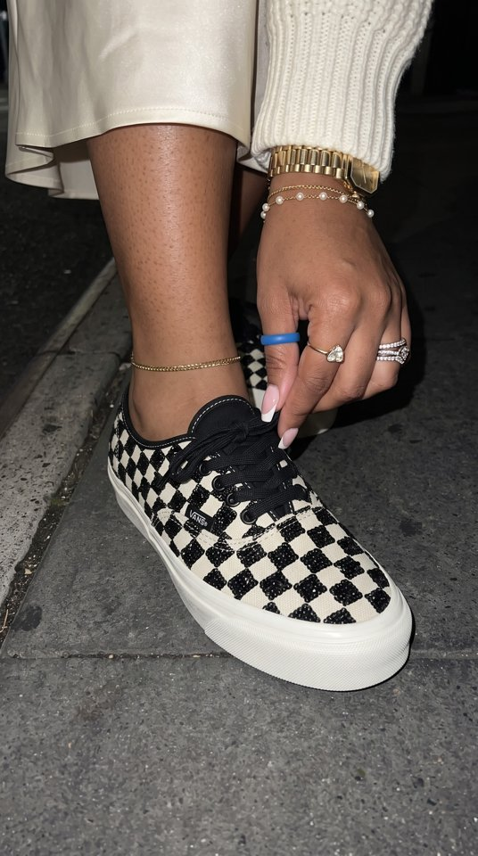
S3 laces (watch face kept, your call)
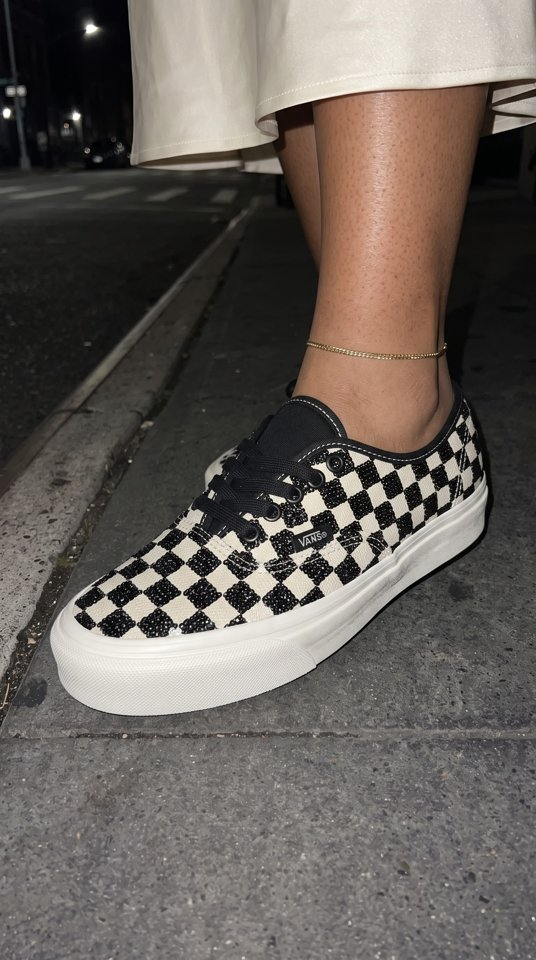
S4 slow push-in on the sequins
Next, on your go: the other 3 clips, 11 s, $0.45. Then the cut (about 11 s, music-only, no text, AI finish). V11 total $0.62 on Kie.
Round 12 · V6 bench turn removed · in Drive
V6 without the turning shoe
You chose the trim. The bench hold starts turning at 0.4 s, not 1 s, so the clean part was too short to keep and the shot is dropped. V6 is now the walk and the standing feet, 9.2 s, $0. It replaced V6 in Drive, and the old file is in Older versions.
V6 r12 · 9.2 s
Round 11 · note: V1 morphs top to bottom · V1 back to round 6 (free) · question on V6
V1 back to the version you approved
The round 5 turn rolled the shoe from the laces onto the sole. V1 now uses the round 6 Kling hold you approved: the shoe never turns, the camera pushes in slowly, and there's no sparkle (checked at 2x). 8.6 s, $0. It replaced V1 in Drive, and the old file is in Older versions. V6's bench hold has the same kind of turn.
V1 r11 · 8.6 s
Round 10 · V4 and V5 fixed · going to Drive
V4 and V5 fixed
V4 done (7.6 s): as you chose, the old deck still was edited to remove only the sole-up shoe, then made into a 5 s Kling 3.0 push-in from the first frame. Two shoes in every frame, print checked at 2x. Spent $0.53 this round (failed still $0.09, edit $0.09, clip $0.35). Kie total $16.39.
V4 r10 · 7.6 s · two shoes
Update after your go: the new V4 still ($0.09) came back with a third shoe again (bottom right), the pair standing up on their heels, and a warm tint. I haven't used it or made the clip. Option: edit the old deck still to remove only the sole-up shoe ($0.09), then the Kling clip ($0.35). Kie total so far $15.95.
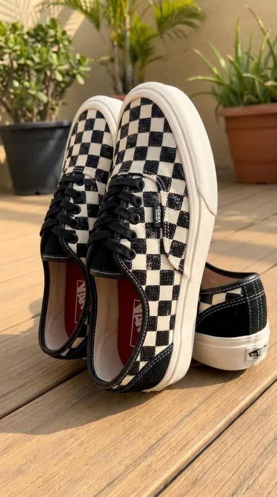
New still: third shoe again, rejected
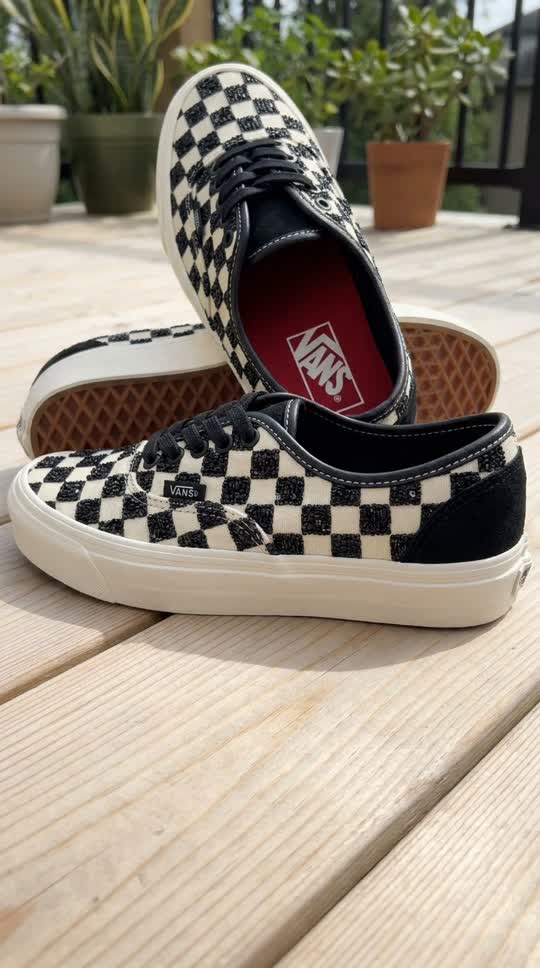
Old still: the edit would remove only the sole-up shoe
V5 (8.7 s, free): the held shoe pointed left for the first 0.6 s and then flipped to the right. The cut now starts after the flip, so the shoe points the same way the whole time. Checked at 6 frames a second.
V4: you're right. The deck dolly shows a third shoe lying on its side with the sole up, behind the pair, until almost the end. My round 9 check missed it, sorry. A trim or crop can't remove it, and the rocking shot alone is only 3.1 s.
Proposed V4 fix, $0.44: one new still of exactly two shoes standing on the deck ($0.09, with the product sheet and the real side-tab close-up as references), then one 5 s Kling 3.0 dolly from that still, first frame only, so it really moves ($0.35). The prompts are written with Prompt Master: no sparkle words, no sole in view, "never a third shoe". The old three-shoe frame is no longer used as a reference. Kie total would go from $15.86 to $16.30.
V5 r10 · 8.7 s · no flip
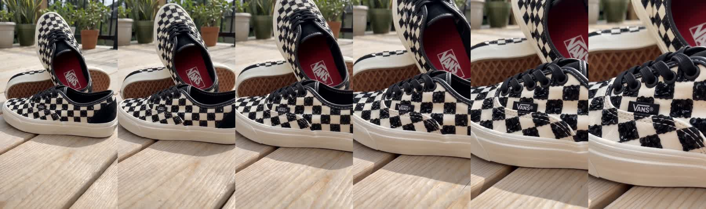
V4 deck dolly: the third shoe (sole up) behind the pair
Round 9 · V2, V3, V4 rebuilt with new moving shots · notes: V4 shows 3 shoes, V5 jumps sides
No held shoe, real movement, 2 shoes
V2 (8.2 s): her feet on the rug, then a new shot of her stepping off the rug and walking on the oak floor. No sparkle.
V3 (8.6 s): two new shots: walking toward the camera across the marble café floor, then sitting at the table, legs crossed, her foot bouncing.
V4 (7.1 s): a new shot of her standing on the deck, rocking heel to toe in both shoes, then the deck dolly. No side jumping, and 2 shoes in every frame.
Made with Kling 3.0 from the first frame only, so the movement is real. Prompts were written with Prompt Master, with the real side-tab close-up as a reference and no sparkle or light effects. Checked: shoes counted in every frame, feet point the same way, the print matches. The V2, V3 and V4 players in Round 4 below play these new files (new file names, so nothing cached). Kie total $15.86.
Your notes: the round 7 holds read as still images, and the sparkle wasn't asked for (my prompt line "light glints on the sequins" caused it; that wording is now out of every prompt). As you chose, V1 (7.2 s), V3 (7.3 s), V4 (8.2 s) and V6 (13.2 s) are back to their round 5 cuts, with real hand movement. V2 keeps its round 7 lift, which moves and never turns. One known point: V3's second shot shows a shoe on the café table behind her hand for 2.3 s. A crop can't remove it without cutting her hand. All 10 players in Round 4 below show the current versions. Kie total $14.10.
Round 7 · notes: still images, sparkle not asked for
Every held shoe now stays still
V3: the third shoe is gone (the café-table shoe was edited out of that still). Both holds are steady, with a slow push-in. 7.6 s.
V4: the steady hold over her feet, then the deck dolly. No switch of side. 8.0 s.
V2: she lifts the shoe toward the lens and back with the same grip, and it never turns. 8.6 s.
V6: the bench hold no longer turns. 12.2 s.
Every hold was made with Kling 3.0, using the still as both the first and last frame, so it can't turn. Prompts were written with Prompt Master. Print checked at 2x. The players in Round 4 below show the new versions. Kie total $14.10.
Round 6 · V1 fixed with a new method · approved: same method for the rest
V1: the shoe no longer turns
Seedance turned the shoe in every version, even when told to hold still. This shot uses Kling 3.0 with the same still as the first AND last frame, so the clip has to end exactly where it starts and the shoe can't turn or switch sides. Her hand holds still, and a slow push-in keeps it moving like video. Print checked at 2x: insole white box with red VANS, sequins on the black squares only, the dark side tab. The V1 player in Round 4 below now shows this version (8.6 s).
Same method for V3 (and the third shoe removed), V4, V2 and V6: $1.70 on Kie. Kie total so far $12.40.
Round 5 · V3, V4, V5, V7 re-cut · notes: V1 and V4 still switch sides, V3 has 3 shoes
Your notes on V4, V5 and V7, plus V3
V4: the held shoe jumped in a single frame. I redid that clip for $0.205 and cut just before its own pop at 2.9 s: one smooth turn in her hand, then the deck dolly, then the steady tilted hold. Now 8.2 s.
V5: dropped the sole shot (the jump to it read as a flip) and the turn at the start of the hold. Now 9.4 s: steady hold, walk, anklet pivot. I measured the walk: the ground really moves, so it isn't in place.
V7: dropped the walk-in-place shot (the ground moved only about 50 px in 4 s). Now 7.6 s: heel-tab hold, then crossed ankles.
V3 (my catch): its second shot flipped to the sole fast, so it now ends before the flip. 7.3 s.
The players in Round 4 below now show these new versions too. Kie total $11.84 ($0.205 for the V4 redo).
Round 4 · all 10 cuts · notes: V4 and V5 flip, V7 walks in place
The 10 videos, 7 to 14 seconds each
Music-only with a silent track, so Grace adds a trending sound in TikTok. No text. Each video has its own bright grade and the AI finish (grain, sharpness, slightly lower saturation). Every clip in them uses the real VANS tab method. Only the clean part of each clip is used: no grip switch, no extra hands, no product change. Spent on Kie: $11.64 against the $7.73 plan; the $3.91 over is redos.
V1 · ref A · grey sidewalk · 8.6 s (r11, back to the round 6 hold)V2 · ref A · oak bedroom · 8.2 s (r9, new walk)V3 · ref A · marble café · 8.6 s (r9, new shots)V4 · ref A · sunny deck · 7.6 s (r10, two shoes)V5 · ref B · asphalt, leggings · 8.7 s (r10, no flip)V6 · ref B · park path, fall leaves · 9.2 s (r12, bench hold dropped)V7 · ref B · crosswalk · 7.6 s (r5)V8 · try-on · entryway · 13.6 sV9 · gift unboxing · 10.1 sV10 · perfect present · 11.1 s
Known points
V1: the bag in shot 1 is the small quilted one, and shot 2's is a plain bar-clasp bag (that still was redone to remove the Chanel clasp). There's no clean free fix.
The insole logo is drawn as a red box with white letters in most clips, which you accepted.
Grace's blue ring is on her finger in V1, V5, V6 and V7, as you chose.
Round 3 · fixed test clip · answered: redo the 13 clips with the tab method
V1S1 redone with the full LGXNDS method
Your notes: the grip switched mid-turn, and the VANS logo looked like it was floating. This version keeps one grip on the collar the whole time, and the side tab now matches the real black woven label because a close-up of it goes in as its own reference. Shown trimmed to the 3 s the cut will use.
V1S1 r1 · 0 to 3 s
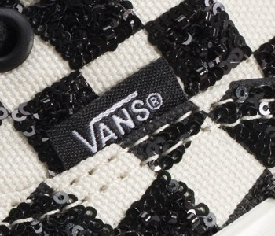
The real side tab (Vans photo)
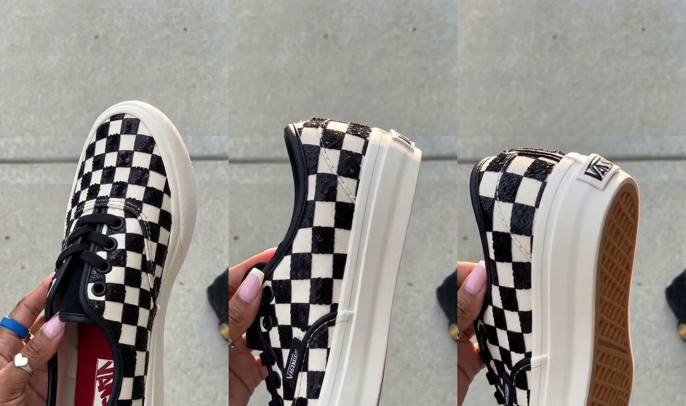
Fixed clip at 1.0, 2.5 and 4.5 s: black tab, sewn flat
The batch clips were made before this fix. In 12 of them the side tab is pale or blue, and 2 have a jump (a gift box that grew a Vans logo, a shoe that snaps flat). Redoing those 13 with this method costs $2.38.
Round 2 · test clip · answered: fix the grip switch and the floating logo
Test clip V1S1 and the fixed stills
Spent $3.45 on Kie so far: 27 stills $2.43, 5 redos and 4 strap edits $0.81, test clip $0.205. The rest of the clips: 26 clips, 117 s, $4.80. Total would be $8.24 against the $7.73 plan; the difference is the redos you approved.
V1S1 · Seedance 2.0 Mini, reference mode · 5 s · the hand turns the shoe from insole-up to its side, like ref A
Checked frame by frame: the sequins stay on the black squares, the white polish and anklet hold, the bag stays logo-free, and the hand grips the shoe the whole time.
Grace's blue silicone ring is still on her finger here. That's her real ring, and the wrist strap was the actual problem. It shows on the finger in 7 stills: V1S1, V3S1, V5S1, V5S2, V6S2, V7S2, V9S1.
Fixed since round 1: V2S2 (one shoe in hand), V8S1 (full checkerboard), V9S2 (two hands, real pair in the box), V1S2 (plain bag), the strap removed on V3S2, V4S2, V8S2 and V10S2, and the V2S2 heel label made white for free.
Round 1 · storyboard · answered (redo 4, remove the strap, accept the insole logo)
27 stills, one strip per video
Spent so far $2.43 on Kie (27 stills × $0.09) against the $7.73 plan. No video clips yet. Each strip shows the start frames of that video's shots, in order.
Needs your OK
Redo 4 broken stills, $0.36 (4 × $0.09). V2S2: three shoes in frame (she holds two). V8S1: half the shoe is plain cream, which is the wrong product. V9S2: three hands. V1S2: the bag clasp came out as a Chanel CC, and painting it out left a soft blob.
The blue silicone band. It's Grace's real ring, but the AI moved it to her wrist as a wide blue strap in V3S2, V4S2, V8S2 and V10S2. Recolouring it gold for free looked like yellow rubber, so I dropped that. Option 1: remove the strap from those 4 with paid edits, $0.36, and leave the band out of every later prompt. Option 2: keep them as they are.
Insole logo. The real insole has a white box with red VANS. The AI draws a red box with white letters on almost every shot. I fixed it free on the test still (V1S1). It's a small detail, and the video clips will redraw it in every frame. I can fix the still frames free, but not the clips. Accept it as is, or tell me if it has to match.
Already fixed free: insole logo on V1S1, the CC clasp on V1S1. Every still was checked at full size, and hands at 2x: grip, white polish, anklets, Grace's bracelet and rings, sequins on the black squares only.
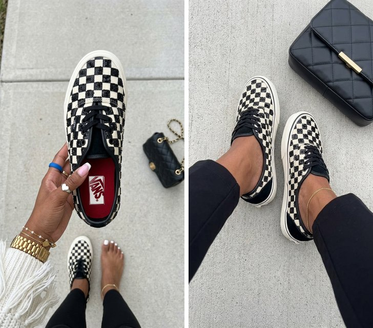
V1 · ref A · grey sidewalk
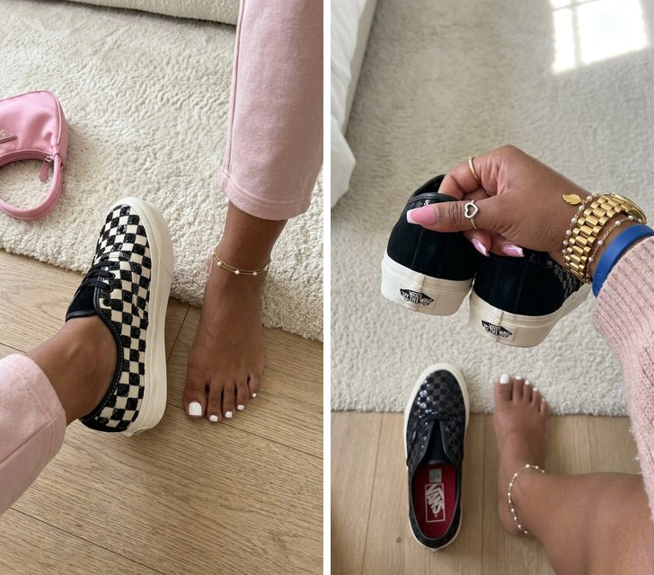
V2 · ref A · oak bedroom (S2 to redo)
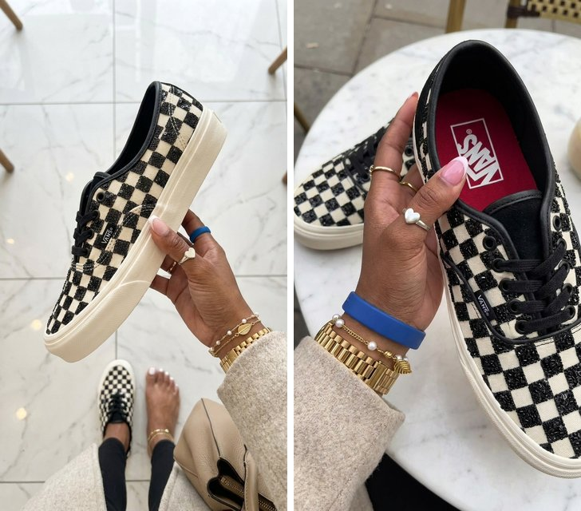
V3 · ref A · marble café
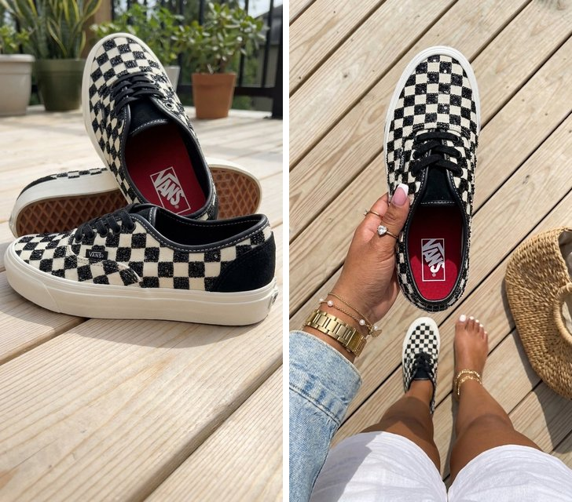
V4 · ref A · sunny deck
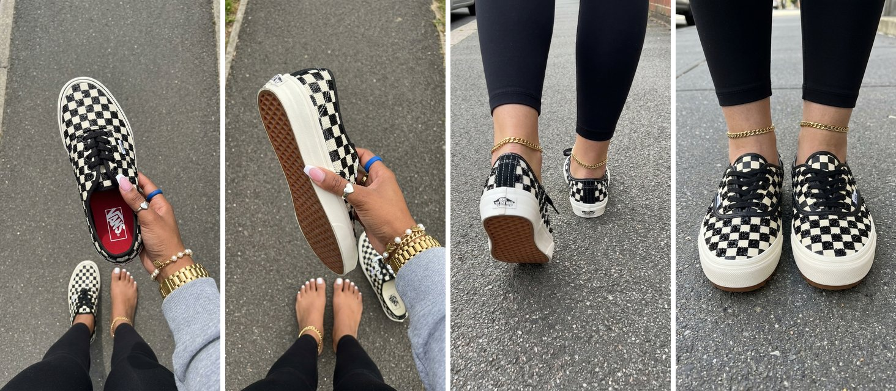
V5 · ref B · asphalt, leggings
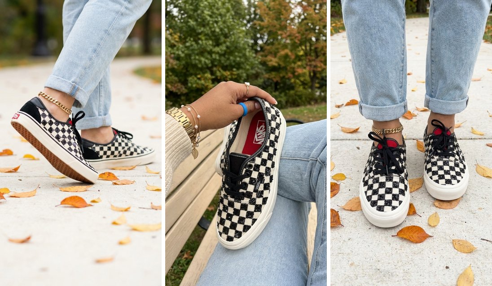
V6 · ref B · park path, fall leaves
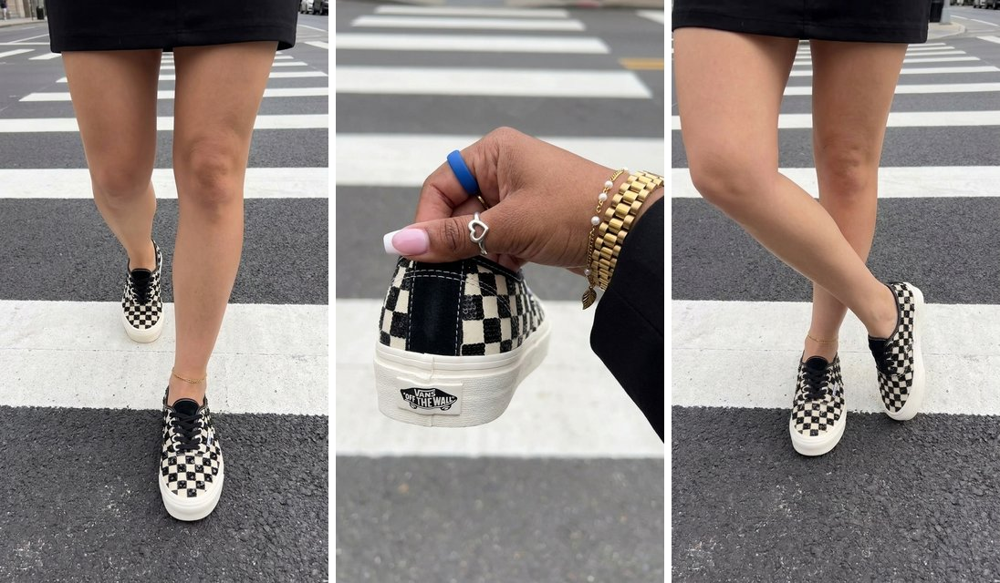
V7 · ref B · crosswalk
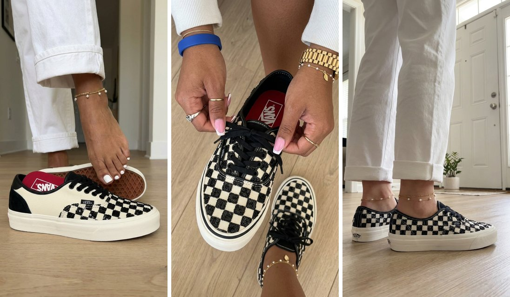
V8 · try-on · entryway (S1 to redo)
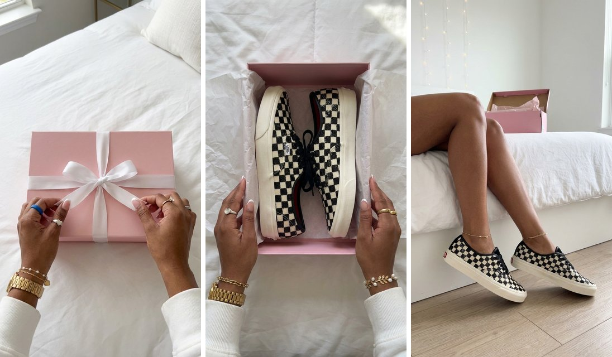
V9 · gift unboxing (S2 to redo)
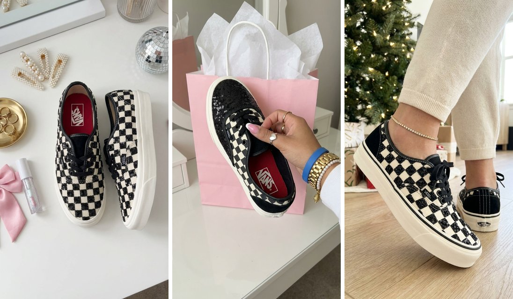
V10 · perfect present
Round 0 · plan · approved: "Go with Kie all the way"
Decisions needed before anything is spent
Kie top-up. Kie balance is $0.93 (checked 2026-10-21), so it can't pay for this job. Option A needs about $5.10, option B about $7.75. Topping up $10 covers either one with room for asked-for redos.
Hand-free clip model. A: Kling on your account. That's about 480 credits for 15 clips, and you have 248, so it needs more credits. B: everything on Kie Seedance. Either way I test one clip on both first.
Sound. The default is music-only, like both references. Grace adds a trending TikTok sound when she posts. The other choice is an optional Grace C voice line per video (lines are written and gate-checked).
On-screen text. The default is none. Both references used a short text line, and the options are written if you want them.
Hands. Grace's real hand sheet with the bracelet (gold watch-link bracelet, pearl leaf chain, her rings, pink and white French tips). Toes in glossy white polish. Keep or drop the blue silicone ring?
V10 voice line says "my sister". Is that true for Grace? If not, it becomes "my best friend".
Cost (nothing spent yet)
Item
Count
Option A (Kling hand-free)
Option B (all Kie)
Stills, Gemini 3 Pro Image
28 × $0.09
$2.52
$2.52
Hand clips, Seedance 2.0 Mini (reference mode)
13 clips, 58 s
$2.38
$2.38
Hand-free clips
15 clips, 69 s
~480 Kling credits
$2.83
Model test (one hand-free clip on Seedance)
1 × 4 s
$0.16
in the above
Total Kie
$5.06 + Kling
$7.73
Optional Grace C voice
10 lines
about 1,300 ElevenLabs characters, only if you say yes
Every redo is asked first with its exact cost. Time after approval is about 5 hours: one test still and one test clip, then the rest, then cuts and QC.
Grace's two references
Ref A (AI) · @girlypopshopfinds · 7 s · POV hand holds the shoe over her bare feet · no voiceRef B (real) · @sophmademebuyit · 16 s · 85.5K views, 311 saves · held, sole, walk, anklets, stance · music only
Product reference sheet and hand
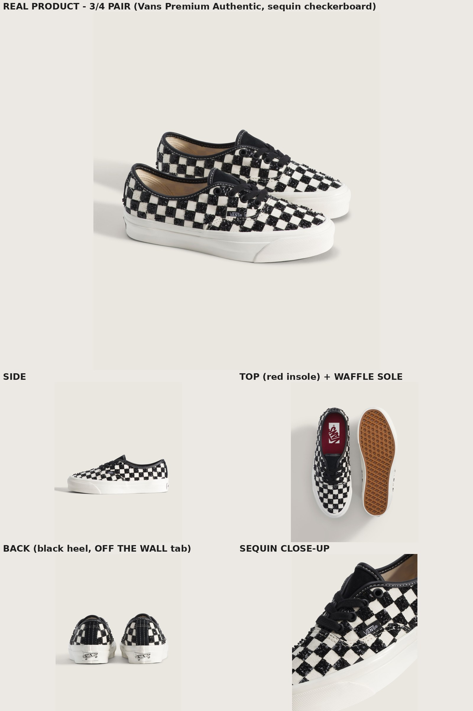
Built free from Vans' own 2000 px photos (style VN000DB8705). Passed with every product still and clip.
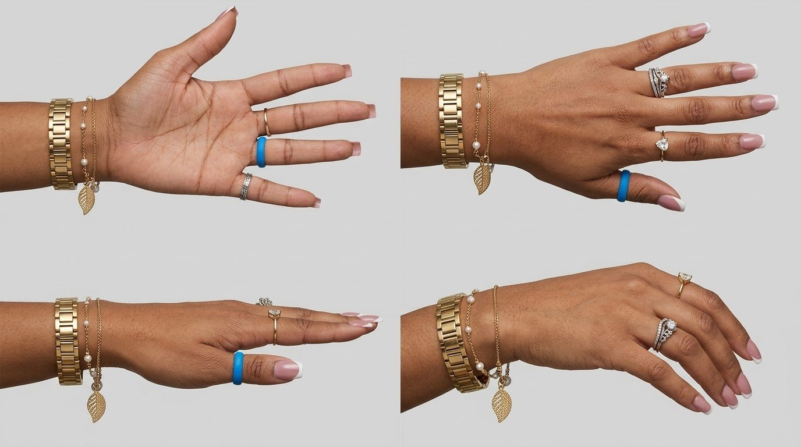
Grace's hand sheet with the bracelet.
The 10 videos
Each video gets its own setting, outfit, anklet, light, shot order and framing, all bright and neutral. HAND = Seedance reference mode. FREE = hand-free (Kling or Seedance).
#
Recreates
Setting
Shots
Length
Optional voice hook
V1
Ref A
Grey sidewalk, black quilted bag, white fringe-knit cuff
HAND hold + turn over bare white-polish toes · FREE feet pivot, push-in on the sparkle
8 s
H089
V2
Ref A
Oak bedroom floor, cream rug, pink satin bag
FREE tilt down, one bare foot + pearl anklet · HAND second shoe over the feet, heel to side
8 s
H030
V3
Ref A
White marble café floor, beige tote, oatmeal coat
HAND side-on tilt, sequins flash, insole · HAND thumb on the sequins, flip to the waffle sole
9 s
H091
V4
Ref A
Sunny wood deck, plants, straw bag, denim cuff
FREE dolly in on the pair · HAND lift one over bare feet, layered anklets
8 s
H098
V5
Ref B
Asphalt sidewalk, black leggings
HAND insole up · HAND sole flip · FREE POV walk · FREE stance, heel pivot
14 s
H021
V6
Ref B
Park path, fall leaves, cuffed light jeans
FREE side walk-in · HAND on a bench, turns the shoe · FREE POV feet tap in the leaves
14 s
H131
V7
Ref B
City crosswalk, black mini skirt
FREE steps onto the stripe · HAND OFF THE WALL heel tab · FREE ankles crossed, slow arc
13 s
H004
V8
Ref B try-on
Bright entryway, white wide-leg pants
FREE bare white-polish foot + pearl anklet slides in · HAND pulls the laces tight · FREE standing, pull back
14 s
H023
V9
Gift unboxing
White bed, pink gift box, white satin ribbon
HAND ribbon + lid · HAND tissue opens, pair sparkles · FREE wearing them on the bed edge
14 s
H055
V10
Perfect present
White vanity flat lay, then a white-lit Christmas tree
FREE flat lay with pearls, gloss, disco ball · HAND into a pink gift bag · FREE feet by the tree
14 s
H056
What the research says
The top Vans shop videos run 7 to 16 seconds with no voice: @haileyrrico 196K, @3uddafinds 191K, @the.v.essentials 179K, @bekstheshoppingmom 70K. They show the shoe in hand or on the feet from the first frame, POV down at the feet, gold anklets, jeans or leggings.
Grace's own 27-second talking post of this shoe has 305 views. That's why music-only is the default.
Facts from vans.com: sequin checkerboard artwork, canvas upper, Sola Foam ADC cushioned insole, waffle outsole, comes with an extra set of laces. TikTok Shop listing: 4.9 stars, 32 reviews, "They are also very comfortable with extra cushiony insoles."
Script gate: GATE OK (audience, coach, viral board of 319 shop videos, facts, hooks, Humanizer, readability grades 1.0 to 5.7, line sources).